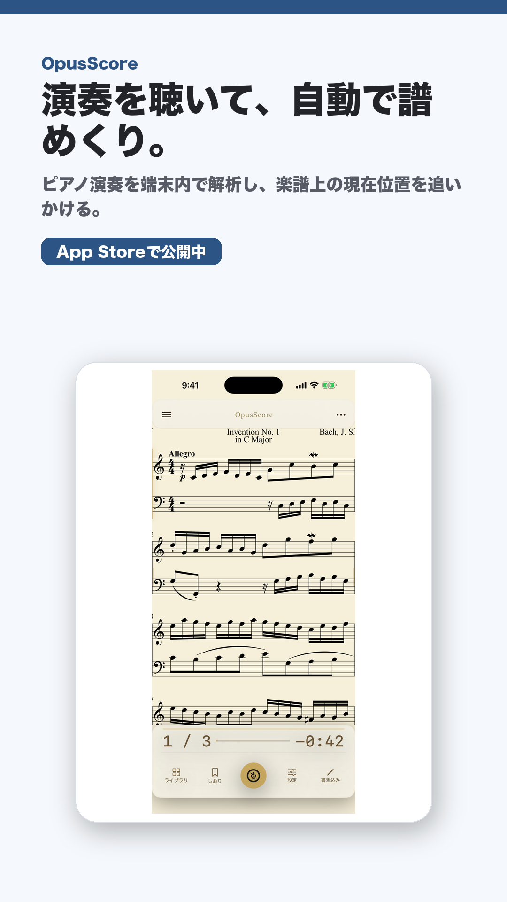

音楽練習 / iOS / iPadOS
OpusScore
演奏を聴いて、自動で譜めくり。
ピアノ演奏を端末内で解析し、楽譜上の現在位置を追いかけるiPhone/iPadアプリ。

紹介文
1行紹介
ピアノ演奏を端末内で解析し、楽譜上の現在位置を追いかけるiPhone/iPadアプリ。
媒体向け概要
OpusScoreは、ピアノ演奏をマイクで聴き取り、楽譜上の現在位置をリアルタイムに追いかけるアプリです。収録サンプル曲とMusicXML取り込みに対応し、処理は端末内で完結します。
掲載向けポイント
切り口ピアノ練習、MusicXML、譜めくり、音楽教育、iPad活用メディア向け。
公開状態ASC app record found and public App Store URL returns 200
Contactasd95179517@gmail.com
素材

- square PNG: https://tmpacc100.github.io/assets/social/opusscore-square.png
- story PNG: https://tmpacc100.github.io/assets/social/opusscore-story.png
- vertical_1080x1920_mp4: https://tmpacc100.github.io/assets/video/opusscore-short.mp4
{kind=link}
{kind=link}
配布リンク
- Store URL: https://apps.apple.com/jp/app/apple-store/id6783845152
- X organic: https://tmpacc100.github.io/go/opusscore/x/
- Threads organic: https://tmpacc100.github.io/go/opusscore/threads/
- TikTok organic: https://tmpacc100.github.io/go/opusscore/tiktok/
- YouTube Shorts: https://tmpacc100.github.io/go/opusscore/youtube-shorts/
- Email outreach: https://tmpacc100.github.io/go/opusscore/email/
- Product Hunt: https://tmpacc100.github.io/go/opusscore/producthunt/